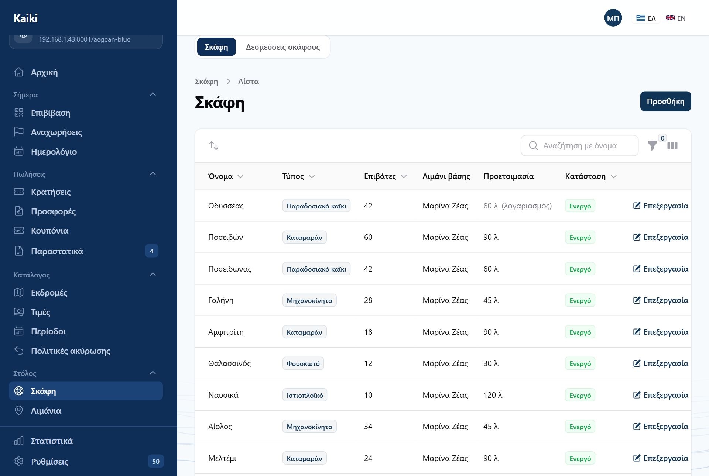
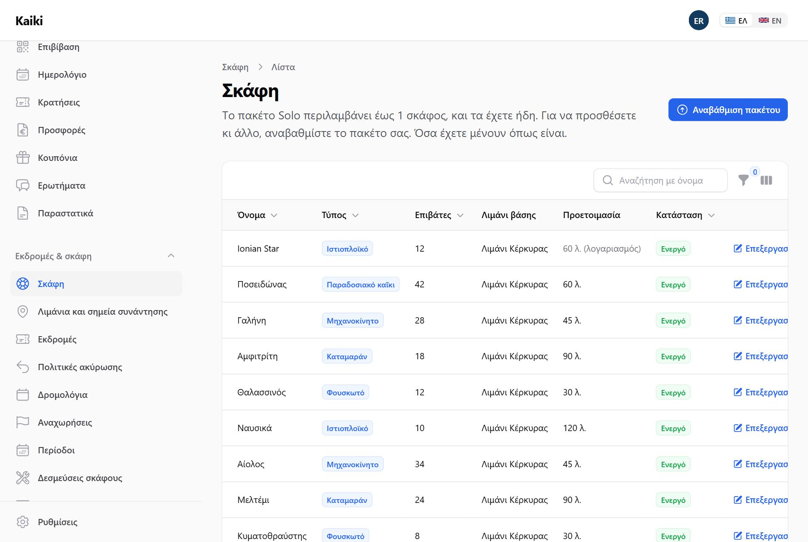
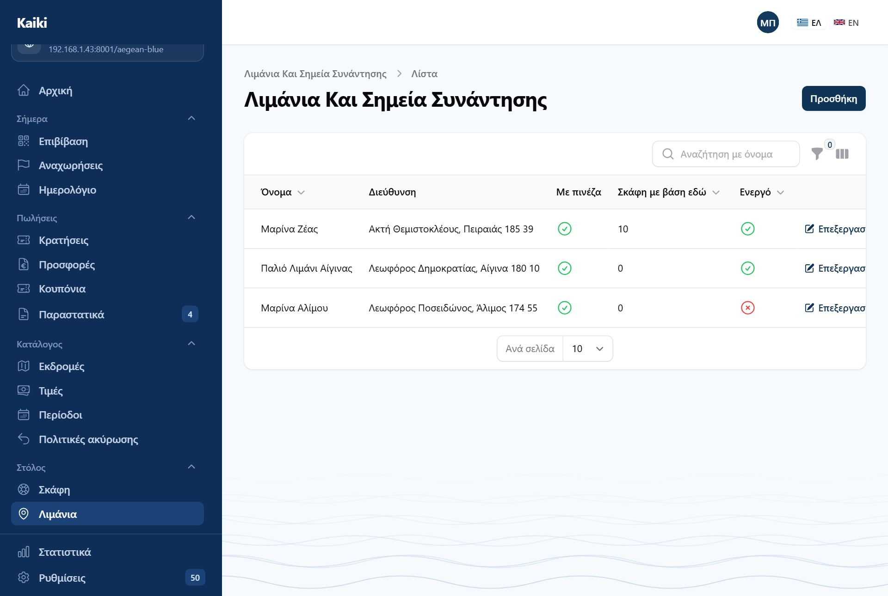
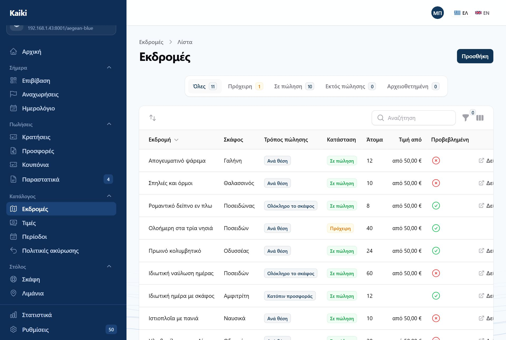
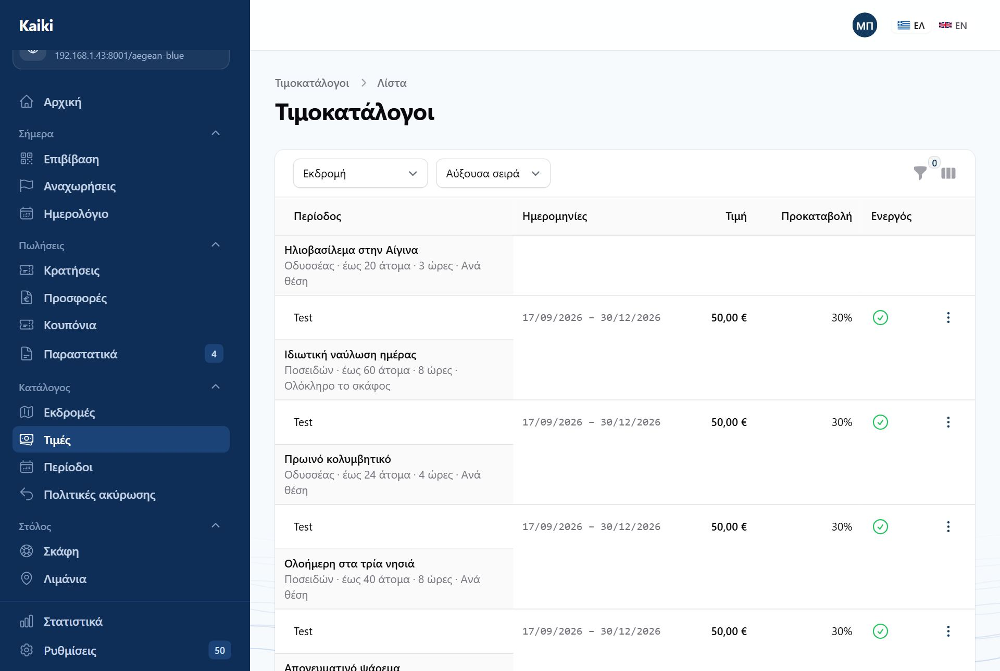
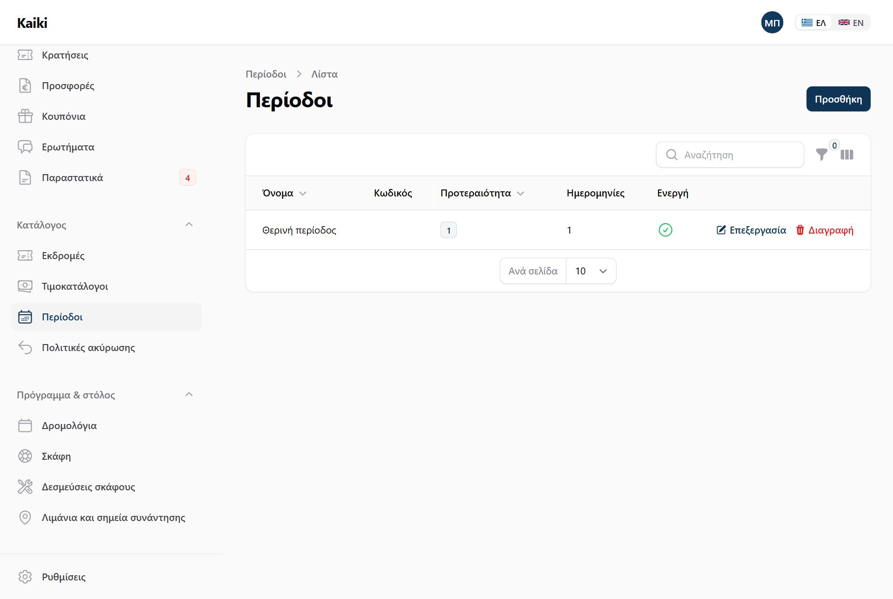
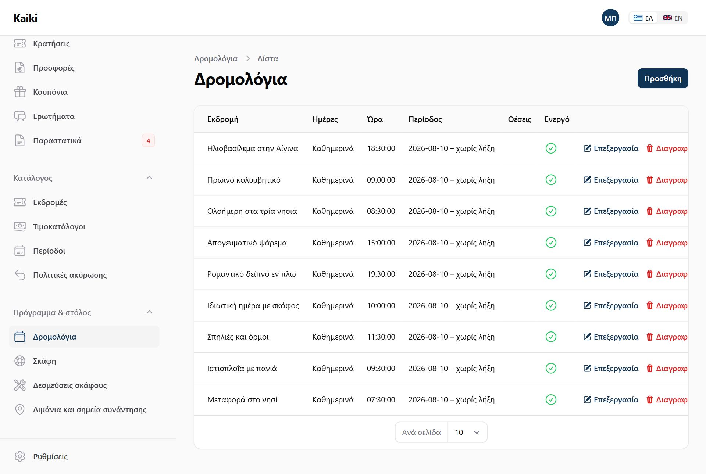
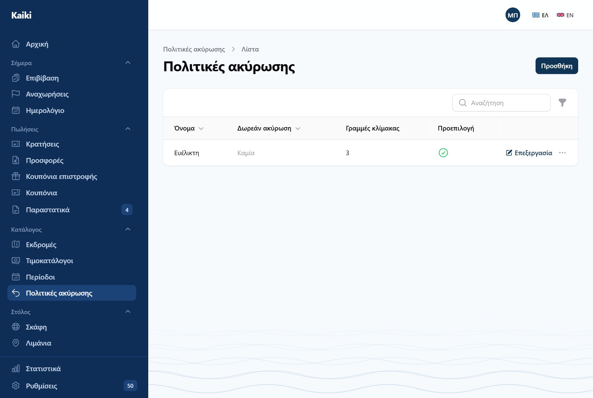

Η σειρά έχει σημασία: κάθε βήμα χρειάζεται το προηγούμενο. Μια εκδρομή θέλει σκάφος, μια τιμή θέλει εκδρομή, μια αναχώρηση θέλει και τα δύο.
Από την πρώτη είσοδο μέχρι την πρώτη κράτηση υπάρχουν έξι βήματα. Ο πίνακας ελέγχου σας δείχνει πού βρίσκεστε: όσο λείπει κάτι, εμφανίζει τη λίστα «Πρώτα βήματα» και εξαφανίζεται μόνη της όταν τελειώσετε.

Πάνω από τη λίστα γράφει πόσα σκάφη χρησιμοποιείτε από όσα περιλαμβάνει το πακέτο σας — «Έχετε 3 από 5 σκάφη του πακέτου Fleet». Το Solo και η δοκιμή περιλαμβάνουν ένα σκάφος, το Fleet πέντε, το Pro όσα θέλετε.

Το όριο ελέγχεται μόνο τη στιγμή που φτιάχνετε καινούργιο σκάφος. Αν αλλάξει το πακέτο σας, κανένα σκάφος δεν σβήνεται, δεν κρύβεται και δεν σταματά να πουλάει· απλώς δεν προστίθεται άλλο μέχρι να χωράει.
Δύο πεδία κάνουν περισσότερη δουλειά απ' όση φαίνεται:
Είναι νόμιμο όριο, όχι πρόταση. Καμία εκδρομή και καμία αναχώρηση δεν το ξεπερνά, ούτε όταν κάνετε κράτηση με το χέρι. Αν προσπαθήσετε να το μειώσετε ενώ υπάρχουν ήδη κρατήσεις για περισσότερα άτομα, το Kaiki αρνείται και σας λέει ποιες εγγραφές το εμποδίζουν.
Πόσα λεπτά χρειάζεστε ανάμεσα σε δύο εκδρομές του ίδιου σκάφους — καθάρισμα, καύσιμα, αλλαγή πληρώματος. Το Kaiki δεν θα πουλήσει ποτέ δύο εκδρομές που πέφτουν μέσα σε αυτό το διάστημα. Αφήστε το κενό για να ισχύσει η γενική ρύθμιση του λογαριασμού.
Αν συμπληρώσετε πόσα μποφόρ αντέχει το σκάφος, θα βλέπετε προειδοποίηση στον πίνακα όταν η πρόγνωση τα ξεπερνά. Τίποτε δεν ακυρώνεται αυτόματα — η απόφαση είναι πάντα δική σας. Αφήστε το κενό αν δεν θέλετε προειδοποιήσεις.

Το πεδίο Πώς θα μας βρείτε μπαίνει αυτούσιο στο email επιβεβαίωσης. Είναι το πιο χρήσιμο πεδίο της οθόνης και το πιο συχνά κενό: «συνάντηση στο μπλε περίπτερο, 15 λεπτά πριν την αναχώρηση» γλιτώνει τηλεφωνήματα κάθε πρωί.
Οι συντεταγμένες είναι προαιρετικές αλλά πολύ πιο ακριβείς από μια διεύθυνση. Αντιγράψτε τες από την πινέζα του χάρτη.

Δύο επιλογές, και δεν αλλάζει αφού γίνει η πρώτη κράτηση:
Η διεύθυνση της εκδρομής στο internet. Παράγεται μόνη της από τον τίτλο σε
λατινικούς χαρακτήρες — «Ιδιωτική ημέρα με σκάφος» γίνεται
idiotiki-imera-me-skafos — και μπορείτε να την αλλάξετε.
Αλλάζοντας το slug μιας εκδρομής που είναι ήδη δημοσιευμένη, χαλάνε όλοι οι παλιοί σύνδεσμοι — όσοι έχετε στείλει με email, όσοι είναι σε ανάρτηση, όσοι έχει καταχωρίσει η Google. Γι' αυτό το Kaiki συμπληρώνει μόνο ένα κενό πεδίο και δεν ξαναγράφει ποτέ ένα που έχετε ορίσει.
Ενήλικας, παιδί, βρέφος και ό,τι άλλο ορίσετε. Κάθε κατηγορία μπορεί να έχει δική της τιμή ή να υπολογίζεται ως ποσοστό της βασικής. Τα βρέφη μετράνε στην κατάσταση επιβατών ακόμη κι όταν δεν πιάνουν θέση — ο κατάλογος για το λιμεναρχείο θέλει κεφάλια, όχι εισιτήρια.
Στο κάτω μέρος της φόρμας υπάρχει μια σειρά από ενδείξεις. Δείχνουν με μια ματιά τι λείπει ακόμη για να μπορεί η εκδρομή να δημοσιευτεί — τιμοκατάλογος, φωτογραφία, περιγραφή, πολιτική ακύρωσης. Οι κόκκινες είναι αυτές που σας κρατούν πίσω· κρατήστε τον δείκτη πάνω σε μία για να δείτε πώς διορθώνεται.

Ο μηχανισμός είναι απλός και αξίζει να τον έχετε καθαρά στο μυαλό σας:
Όταν δύο περίοδοι καλύπτουν την ίδια ημερομηνία, κερδίζει αυτή με τη μεγαλύτερη προτεραιότητα. Έτσι ο «Δεκαπενταύγουστος» υπερισχύει του «Καλοκαιριού» χωρίς να χρειαστεί να κόψετε το καλοκαίρι στα δύο.

Ορίζεται στον τιμοκατάλογο: ποσοστό ή σταθερό ποσό. Είναι αυτό που πληρώνει ο επισκέπτης τη στιγμή της κράτησης· το υπόλοιπο μένει ανοιχτό και φαίνεται στον πίνακα ελέγχου ως «Οφείλονται σε εσάς».
Ο ίδιος τιμοκατάλογος ορίζει και τα δύο άκρα: πόσες ώρες πριν την αναχώρηση κλείνουν οι κρατήσεις (0 σημαίνει μέχρι την τελευταία στιγμή) και πόσες μέρες νωρίτερα μπορεί κανείς να κλείσει (κενό σημαίνει χωρίς όριο).

Ένα δρομολόγιο δεν είναι αναχώρηση· είναι ο κανόνας που τις φτιάχνει. Αφού το αποθηκεύσετε, οι αναχωρήσεις εμφανίζονται στη λίστα Αναχωρήσεις και από εκεί και πέρα ζουν χωριστά: μπορείτε να ακυρώσετε ή να αλλάξετε μία, χωρίς να πειραχτεί ο κανόνας.
Δεν χρειάζεται δρομολόγιο για μία εκδρομή που θα γίνει μία φορά. Προσθέστε την απευθείας από τις Αναχωρήσεις.

Μια πολιτική έχει τρία μέρη:
Κάθε κράτηση κρατά αντίγραφο της πολιτικής που ίσχυε όταν έγινε. Αν αλλάξετε την πολιτική τον Ιούλιο, οι κρατήσεις του Ιουνίου ακυρώνονται με τους όρους του Ιουνίου. Αυτό δεν είναι ρύθμιση — είναι το πώς δουλεύει, και σας προστατεύει όσο και τον πελάτη.